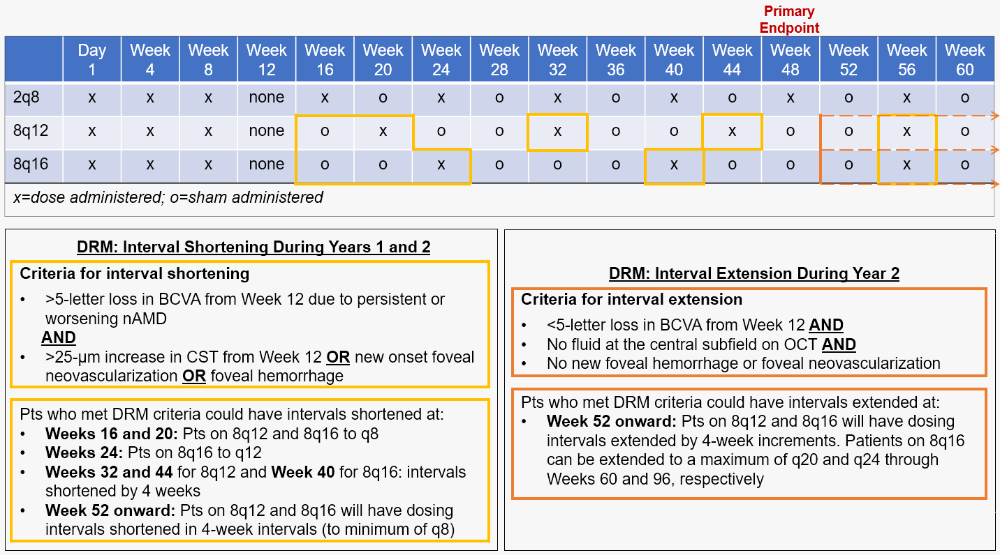

PULSAR
Resumen1-3
- PULSAR es un estudio de fase III, en curso, aleatorizado y con doble enmascaramiento, para evaluar el perfil de eficacia y seguridad de una formulación de aflibercept intravítreo (AFL-IVT) de 8 mg en comparación con AFL-IVT de 2 mg en el tratamiento de la degeneración macular asociada a la edad (DMAE) neovascular.
- PULSAR es un estudio de 96 semanas de duración, con la opción de ampliar los intervalos de tratamiento hasta 24 semanas y con una ampliación opcional de 1 año, sin enmascaramiento, hasta la semana 156.
- El 83% de los pacientes tratados con AFL-IVT 8 mg mantuvieron intervalos de administración prolongados de ≥12 semanas.
- El cambio medio en la mejor agudeza visual corregida (MAVC) desde el inicio hasta la semana 48 fue de 6.7, 6.2 y 7.6 letras ETDRS (Early Treatment Diabetic Retinopathy Study) en los grupos 8q12, 8q16 y 2q8, respectivamente.
- En general, la mejora anatómica observada con IVT-AFL de 8 mg se mantuvo a lo largo del tiempo en las semanas 60 y 96.
- En las semanas 60 y 96, respectivamente, el 91% y el 89% de los pacientes que recibieron IVT-AFL de 8 mg cada 16 semanas alcanzaron intervalos de dosificación ≥12 semanas y el 77% y el 78% alcanzaron intervalos ≥16 semanas.
- El perfil de seguridad de IVT-AFL de 8 mg fue comparable al de AFL-IVT de 2 mg durante 96 semanas.
Eficacia en la semana 481
Eficacia en las semanas 60 y 962
Seguridad1-3
Design1,2
- Treatment-naïve patients ≥50 years of age with active subfoveal CNV secondary to nAMD, ETDRS BCVA letter scores of 78 to 24 (Snellen equivalent 20/32 to 20/320), decreased BCVA due to nAMD, and IRF and/or SRF present on optical coherence tomography that affected the central subfield were enrolled.
- Patients were randomized 1:1:1 to receive IVT-AFL 8q12, 8q16, or 2q8 after 3 initial monthly injections. Dosing regimen modifications were permitted starting at Week 16 for the IVT-AFL 8 mg groups, based on prespecified criteria.
- The primary endpoint at Week 48 was mean change in BCVA (non-inferiority).
Treatment Groups and Dosing Regimens Through Week 602

Results
Baseline Demographics (FAS)1

335 patients were randomized to 8q12, 338 to 8q16, and 336 to 2q8.1
Week 481
- Completion rates were 94.6% for 8q12, 92.9% for 8q16, 92.3% for 2q8.
- 83% of 8 mg patients maintained dosing intervals of ≥12 weeks.
- Mean number of injections were 6.1 for 8q12, 5.2 for 8q16, and 6.9 for 2q8.
Week 602
- 87% of 8 mg patients maintained dosing intervals of ≥12 weeks.
- Mean number of injections were 7.1 for 8q12, 6.2 for 8q16, and 8.8 for 2q8.
Week 962
- 88% of 8 mg patients maintained dosing intervals of ≥12 weeks.
- Mean number of injections were 9.7 for 8q12, 8.2 for 8q16, and 12.8 for 2q8.
- The 8q12 and 8q16 groups had non-inferior BCVA change compared to 2q8 through Weeks 48 and 96.1,2
BCVA Outcomes (FAS)2
Key Secondary Endpoint Results Through Week 48 (FAS)1

Absolute CST Through Week 96 (FAS)2
- Change in CST was similar in all 3 treatment arms through 96 weeks, with minimal fluctuations over the course of treatment.2
Safety
- The safety profile of IVT-AFL 8 mg was found to be similar to that of IVT-AFL 2 mg through 96 weeks.1-3
-
Through Week 60:2
- Ocular TEAEs occurring in ≥3% of patients in any treatment group were cataract, increased IOP (defined by preferred terms "intraocular pressure increased" and "ocular hypertension"), SRF, retinal hemorrhage, visual acuity reduced, and vitreous floaters.
Most Frequent TEAEs through Week 60 (SAF)2

-
Through Week 96:3
- There were no cases of retinal vasculitis, occlusive retinitis, or endophthalmitis in the 8 mg group.
- The rate of IOI was 1.3% for the 8 mg groups and 2.1% for the 2 mg group.
- There was no difference in IOP increase rates between 8 mg and 2 mg.
References
-
Korobelnik JF. Intravitreal aflibercept 8 mg injection in patients with neovascular age-related macular degeneration: 48-week results from the Phase 3 PULSAR Trial. Presented at: 55th Annual Scientific Meeting of The Retina Society; November 2-5 2022; Pasadena, CA.
Link -
Lanzetta P, et al. Intravitreal Aflibercept 8 mg Injection in Patients With Neovascular Age-Related Macular Degeneration: 60-Week and 96-Week Results from the Phase 3 PULSAR Trial. Presented at: EURETINA; October 5-8 2023; Amsterdam, The Netherlands.
Link -
Bayer Press Release. Two-year topline results from the pivotal study PULSAR. August 10, 2023.
Link